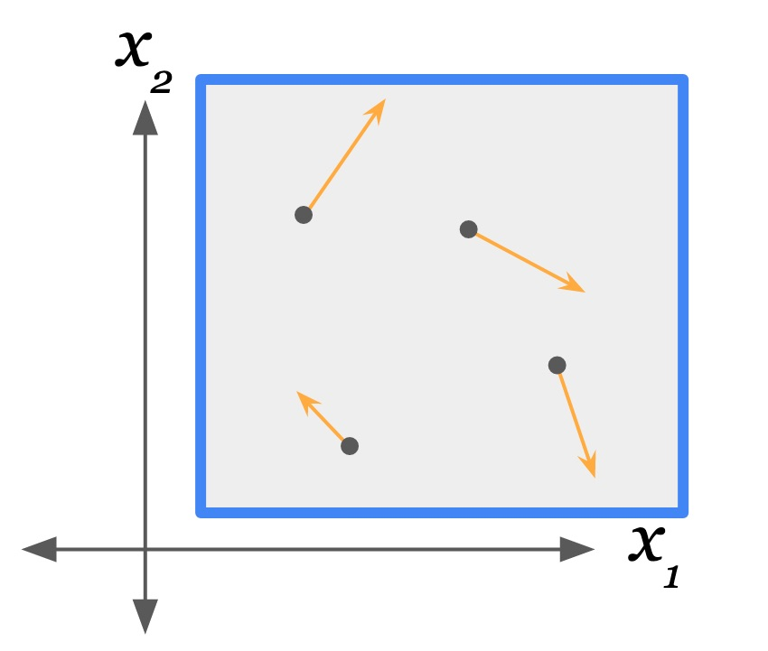

In Reversible Szilard Cycle Problem I pondered whether uncopying a bit of information at the end of the Szilard cycle makes the full cycle reversible, apparently getting around the 2nd law. This “loophole” is more much pervasive to thermodynamics than the Szilard engine. I will go through its generalization in #Maxwell’s Superdemon. I assume the 2nd law holds, so in #Slaying The Superdemon I consider some possible reasons why this loophole doesn’t work.
$$
\newcommand{\0}{\mathrm{false}}
\newcommand{\1}{\mathrm{true}}
\newcommand{\mb}{\mathbb}
\newcommand{\mc}{\mathcal}
\newcommand{\mf}{\mathfrak}
\newcommand{\ms}{\mathscr}
\newcommand{\and}{\wedge}
\newcommand{\or}{\vee}
\newcommand{\es}{\emptyset}
\newcommand{\a}{\alpha}
\newcommand{\t}{\tau}
\newcommand{\T}{\Theta}
\newcommand{\D}{\Delta}
\newcommand{\d}{\delta}
\newcommand{\o}{\omega}
\newcommand{\O}{\Omega}
\newcommand{\x}{\xi}
\newcommand{\z}{\zeta}
\newcommand{\fa}{\forall}
\newcommand{\ex}{\exists}
\newcommand{\X}{\mc{X}}
\newcommand{\Y}{\mc{Y}}
\newcommand{\Z}{\mc{Z}}
\newcommand{\P}{\Psi}
\newcommand{\y}{\psi}
\newcommand{\p}{\phi}
\newcommand{\l}{\lambda}
\newcommand{\L}{\Lambda}
\newcommand{\G}{\Gamma}
\newcommand{\g}{\gamma}
\newcommand{\B}{\mb{B}}
\newcommand{\m}{\times}
\newcommand{\N}{\mb{N}}
\newcommand{\I}{\mb{I}}
\newcommand{\H}{\mc{H}}
\newcommand{\R}{\mb{R}}
\newcommand{\s}{\sigma}
\newcommand{\e}{\varepsilon}
\newcommand{\set}[1]{\left\{#1\right\}}
\newcommand{\par}[1]{\left(#1\right)}
\newcommand{\vtup}[1]{\left\langle#1\right\rangle}
\newcommand{\abs}[1]{\left\lvert#1\right\rvert}
\newcommand{\inv}[1]{{#1}^{-1}}
\newcommand{\ceil}[1]{\left\lceil#1\right\rceil}
\newcommand{\dom}[1]{_{\mid #1}}
\newcommand{\df}{\overset{\mathrm{def}}{=}}
\newcommand{\M}{\mc{M}}
\newcommand{\up}[1]{^{(#1)}}
\newcommand{\Dt}{{\Delta t}}
\newcommand{\tr}{\rightarrowtail}
\newcommand{\qed}{\ \ \blacksquare}
\newcommand{\c}{\overline}
\newcommand{\dg}{\dagger}
\newcommand{\dd}{\mathrm{d}}
\newcommand{\pd}{\partial}
$$
Note: I will use the term “system” to refer to a state space, and “process” to refer to a particular time-evolution (i.e. propagator) that state undergoes. In other words, a system undergoes a process.
Maxwell’s Superdemon
The Reversibility Game
We can treat the general reversibility question in thermodynamics as a game. Player 1 provides a process to be reversed, and the goal for player 2 is to reverse the process back to its initial state without any net change to the environment. Player 2 is allowed to interact with and modify the system in question in any way they wish. Though this seems like it gives player 2 too much power (making this a rather easy game), player 2’s task should be impossible for a certain class of processes by the 2nd law of thermodynamics.
To analyze this game formally, we need to make the game and its rules well defined. Though we can use classical mechanics to describe processes to be reversed, the question remains: what kinds of actions can player 2 take on any given process represented in classical mechanics?
An answer I’ve been toying with is motivated by the idea that interactions between any two systems are ultimately mediated by force fields (e.g. gravity and the EM field). So classical mechanics already comes packaged with a general purpose interaction formalism: the potential field.
If we wanted to keep the space of possible player 2 actions as broad as possible, we could specify that player 2 can arbitrarily manipulate a (time-dependent) external potential field that the process exists on top of (one which the components of the system interact with). “Time-dependent” means the state of the potential field may be a function of some absolute time (player 2 decides how it changes and when). “External” means it is not considered part of the system in question, but is generated by an external source. In this external potential field, player 2 can manifest walls and potential slopes that push/pull parts of the system around. By looking at the total change in the system’s energy, we can infer how much energy player 2 had to have spent to get there.
The full action space of player 2 is then the choice of any potential field that is a function of time (may change over time any way player 2 wishes) overlaid on top of the system. This “interaction via potential field” framework allows for a very general class of interventions on physical systems, though it may be too general. As we shall see, some field manipulations player 2 can make may not be realistically achievable. However, I would not expect the validity of the 2nd law to hinge on the mere intractability of engineering what is needed to instantiate some potential field. Instead I would expect there to be some fundamental reason the specific fields needed to violate the 2nd law in some instance of this game are impossible to realize.
I’ll make heavy use of external potential fields that contain “walls”, which are steep potential hills. So when I talk about a gas in a box, the gas particles make up the system and the walls of the box make up the environment of the gas. Those walls are potential hills in the external potential field. Player 2 is allowed to manipulate that external potential anyway they please, e.g. by modifying, adding and removing walls, among other manipulations.


Measurement
I’ve specified how player 2 can affect the target system in this game, but we also need to specify how player 2 can be effected by the system.
Player 2 acts like the environment of the system by manipulating the external potential field the system lies over. But the system may also produce its own potential field(s) which affect the environment. In this way the system may leak information about its state into the environment (any environment state whose trajectory depends in part on the system’s state will gain information about the system).
Below I will consider cases when player 2 does not have complete information about the system or the environment. In those situations, player 2 is allowed to perform measurements on the system to gain information. A measurement apparatus is a system within the environment whose state evolution depends on the system’s state evolution.
Using the data (un)copying process from Reversible Szilard Cycle Problem#uncopying as an intuition pump, we can suppose that the target system’s state determines some potential field which the measurement apparatus sits upon. As the system’s state changes over time, that potential field changes over time, which may guide the measurement apparatus’s state.

In this way, any potential fields the target system emits can be used to perform measurements on the target system, which amounts to correlating environment state with the state of the target system.
Example: Free Expansion
A canonical example of an irreversible process is the free expansion of a gas, a.k.a. Joule expansion. This is where a gas is allowed to expand into a larger region of space unimpeded. The gas does no work in the process (e.g. does not push a piston), and so its thermodynamic potential to do work is lost.

A summary of the free expansion process:
(a) There is a gas in a box at equilibrium.
(b) The box is made rapidly larger so that the gas expands into the resulting vacuum (e.g. by removing a barrier to a larger container, or by moving a piston).
(c) The gas returns to equilibrium in the larger container.
We can represent the state of an N-particle gas with the vectors $\vec{x},\vec{v}$ of the combined positions and velocities of the particles respectively (in one, two or three spatial dimensions). The process (how this state changes over time) is fully determined by a Lagrangian (or Hamiltonian), which describe the total energy of the system (kinetic and potential). Specifically, the Lagrangian/Hamiltonian is the difference/sum of the total kinetic energy $V(\vec{x},\vec{v})$ and total potential energy $U(\vec{x},\vec{v})$ of the system, as functions of its state. There may also be an external potential term $U_\text{ext}$ which is a function of the system state and some environment state. The external potential defines the interaction between the system and the environment (e.g. collisions with container walls). Player 2 interacts with the system by modifying $U_\text{ext}$ over time.
From the given Lagrangian/Hamiltonian, we can derive the propagator, $\t_\Dt$, for the time interval $\Dt$. This $\t_\Dt$ is a function that propagates state through time, i.e. $\vec{x}_{t+\Dt},\vec{v}_{t+\Dt}=\t_\Dt(\vec{x}_t,\vec{v}_t)$ where $\vec{x}_t,\vec{v}_t$ is the state of the gas at time $t$, and $\vec{x}_{t+\Dt},\vec{v}_{t+\Dt}$ is the state of the gas at time $t+\Dt$. This relationship holds for all $t\in\R$ and for all $\Dt\in\R$ (including negative intervals).
Note that I assume the system and its environment are time-independent, meaning that $V$, $U$ and $U_\text{ext}$ are not functions of some absolute time variable $t$. That makes the Lagrangian/Hamiltonian time-independent, and thus the propagator time-independent (it only depends on state and time interval). However, player 2 may modify $U_\text{ext}$ to be time-dependent, which results in a time-dependent propagator, i.e. $\t_\Dt$ becomes a function of the state at time $t=0$ only.
If the gas starts at state $\vec{x}_0,\vec{v}_0$ at time $t=0$, then the entire trajectory of the gas through time is given by $\t_t(\vec{x}_0,\vec{v}_0)$ for all $t \in\R$.
Suppose player 1 provides a freely expanding gas as the process that player 2 is tasked with reversing. Specifically, the gas starts in state $\vec{x}_0,\vec{v}_0$, occupying the small container. By time $T$, the gas occupies the large container represented by the state $\vec{x}_T,\vec{v}_T=\t_T(\vec{x}_0,\vec{v}_0)$. How does player 2 intervene on this gas starting at state $\vec{x}_T,\vec{v}_T$ to return it to state $\vec{x}_0,\vec{v}_0$ at some later time?
Physics obeys time-reversal symmetry, meaning that time-inverted trajectories are physically valid. That is to say, the system traveling in reverse (but forward in time) along its historical trajectory is a valid process for it to undergo. We need only negate the velocities at some moment in time to put the system on its time-reversed trajectory. To be specific, if player 2 could somehow make it so that $\vec{v}_{T+\e}=-\vec{v}_{T}$ and $\vec{x}_{T+\e}=\vec{x}_T$ for some time-interval $\e>0$, then $\vec{x}_{T+\e+t},\vec{v}_{T+\e+t}=\vec{x}_{T-t},\vec{v}_{T-t}$ for all $t\geq0$. That means $\vec{x}_{2T+\e},\vec{v}_{2T+\e}=\vec{x}_{0},\vec{v}_{0}$ at which point the system is returned to its initial state.
Player 2 can achieve this with micro-walls, i.e. very small, localized walls in the potential field. As I mentioned, a wall is essentially a very steep (or infinitely steep) hill in the external potential field. Walls deflect particles (are repulsive). A micro-wall takes up very little space.

Assuming player 2 can create and remove these micro-walls for free (when there is no active collision between them and the particles), then player 2 can manifest these micro-walls just during the time interval from $T$ to $T+\e$. If a micro-wall is placed in front of every particle in just the right orientation, then each particle will be deflected in the opposite direction, i.e. its velocity will be negated.

State of the gas at time $T$. Blue lines are walls (steep thin hills) in the external potential. Orange lines are velocity vectors of the particles. Microwalls placed between time $T$ and $T+\e$. Gas particles are about to collide with their respective microwalls. State of the gas at time $T+\e$. Microwalls are removed.
Since the microwalls are present between the absolute times $T$ and $T+\e$, the external potential $U_\text{ext}$ becomes time-dependent.
Note that I assume that manipulations of the potential field which do not lift or lower matter, or change the gradient (slope) of the field under matter (changing the force felt by the matter, and thus changing the system’s total energy), cost no energy to perform (this is an idealization). So the manifestation and dissolution of walls and other shapes in the potential landscape can be done for free so long as there is not matter directly on top of these shapes as they are modified.
The Role of Uncertainty
The above example demonstrates that player 2 can reverse an isolated process given perfect knowledge of its state. Let’s see what happens if player 2 lacks state information.
Suppose that player 2 does not know the initial state of the gas, but only that the gas starts off inside the smaller container (and maybe that its at equilibrium at a certain temperature). Player 2 will have to look at the state of the gas (perform a measurement) at time $T$ in order to pull the same trick as before. But like with the Szilard engine, whether player 2 can do this reversal for free hinges on whether the gas measurement can be reset for free (remember that reversal requires the environment, i.e. physical memory, to be reset as well).
Note that player 2’s state uncertainty is propagated down to any device player 2 employs. For example, if player 2 builds a device that creates the micro-walls needed in the external potential to reverse the gas, how does this device know the correct placement and orientation of the micro-walls? No matter what, the way in which the external potential changes over time needs to be a function of the state of the gas, i.e. is conditional on the gas. For the external potential to be conditioned on the state of the system, some environment state needs to become correlated with the state of the system in the way described earlier: #Measurement. This is how the intervention on the system needed to reverse it depends, fundamentally at a physical level, on information about the system’s state.
Since the gas evolved deterministically according to the propagator $\t_\Dt$ (for every $\Dt\in\R$), its state information (positions and velocities of the particles) is preserved through time. Suppose the state of the gas can be recorded with a special camera (an infinite resolution camera). One photo captures the positions of all the particles, and two rapidly sequential photos to capture their velocities. As discussed, player 2 can use this information to reverse the free expansion of the gas.
But player 2 might be able to do more than that. Suppose player 2 takes two rapidly sequential photos at time $T$, and stores these photos in some physical medium. Since player 2 knows the dynamics of the system (i.e. knows $\t_\Dt$), then in principle player 2 can predict what the photos taken at time $T+\e$ would look like. We might suppose player 2 can even apply $\t_{\e}$ to the photos, replacing them in memory with the output of $\t_{\e}$. This should be in principle a reversible process since $\t_{\e}$ is a bijection (no information is lost by applying this function). If we suppose that the process of taking these photos is reversible and costs no energy (like the copy process from the Szilard engine discussion), then player 2 can apply the reverse of the camera process, i.e. the “uncamera” process, to the time $T+\e$ photos in memory at time $T+\e$, which would reset the state of the photo storage to its default state at no energy cost. Player 2 is performing an uncopy.
The General Uncopy Loophole
Classical mechanics allows us to consider an arbitrary system described with generalized coordinates, $\vec{q}$ and $\dot{\vec{q}}$, a vector of parameters and their time-derivatives, which fully specifies the state of the system. These parameters can be positions in some reference frame, but can represent other degrees of freedom such as rotations or distances between parts within the system. As before, a Lagrangian (or Hamiltonian) is provided that fully determines the trajectory the system takes through time given any initial state.
Let $\t_\Dt$ be the propagator induced by the given Lagrangian/Hamiltonian and let $\vec{q}_t,\dot{\vec{q}}_t = \t_t(\vec{q}_0,\dot{\vec{q}}_0)$ for some initial state $\vec{q}_0,\dot{\vec{q}}_0$. Assuming player 2’s potential field interacts with every degree of freedom in $\vec{q}$, then player 2 can construct generalized micro-walls in the potential field that has the effect of negating all of the velocity coordinates so that $\dot{\vec{q}}_{T+\e}=\dot{\vec{q}}_T$ for some time $T$. Then the system will proceed to run in reverse until it returns to its initial state $\t_t(\vec{q}_0,\dot{\vec{q}}_0)$.
For a system with initial state unknown to player 2, this is the general reversal procedure:
(a) The system progresses from time 0 to time $T$ (player 2 does not yet intervene).
(b) At time $T$, player 2 takes two “pictures” of the states $\vec{q}_T$ and $\vec{q}_{T+\d}$ (for very small $\d>0$) in quick succession. These state pictures are saved to physical memory (initial in a known default state).
(c) Player 2 transforms its saved pictures by applying $\t_\e$ (using their own computational or simulation apparatus), resulting in pictures of the states $\vec{q}_{T+\e}$ and $\vec{q}_{T+\e+\d}$ in memory, all done in the time span between $T$ and $T+\e$.
(d) Player 2 performs the reverse of the camera process which takes the state $\vec{q}_{T+\e}$ of the gas and its duplicated representation in memory and results in the memory being returned to its default state. Same is done for the second picture of $\vec{q}_{T+\e+\d}$ a moment later.
(e) Player 2 waits another time interval of $T$ for the system to return to its initial state.
Call this procedure the uncopy loophole. A loophole in physics is a potential way around some proposed no-go theorem (a theorem that says you can’t do something). A famous example are the loopholes in Bell’s theorem. All these loopholes (except superdeterminism) have been closed, meaning its been shown that these tricks don’t invalidate Bell’s theorem (in this case experimentally, but theoretical proof could also be sufficient).
Some other entropy increasing processes which could be reversed in this way (if the loophole can’t be closed) include the mixing of two kinds of gases and heat diffusion.
Superdemons
What I’ve constructed is a much more beefed up version of Maxwell’s demon. While pondering the recently formulated laws of thermodynamics, Maxwell (of Maxwell’s equations fame) conceived of a thought experiment where a tiny “demon” selectively allows particles through a partition in a box containing a gas - specifically allowing high velocity particles through and blocking low velocity particles from passing through. As time passes, one side will be increasingly hotter than the other side. If the demon can carry out this discrimination without energy cost (or low energy cost), then the diffusion of heat between two gasses (one initially hot and one initially cold) can be reversed without energy cost, seemingly violating the 2nd law.

I want a term for a very powerful player 2 that can perform any of the potential field manipulations allowed for by the game specified above, such as micro-walls (for negating velocity). Let’s call this a superdemon. Think of a superdemon as a maximally adversarial Maxwellian demon which, welding an arbitrarily manipulable potential field, will pull any trick it can to reverse any process you give it without energy cost to itself.
Slaying The Superdemon
How can the uncopy loophole be closed? What prevents it from being carried out in practice?
One possible reason is that copy and uncopy are processes that take time. For chaotic and fast moving systems like gasses, the target data to be copied/uncopied is nonstationary, and changing quickly at that. On the other hand, is this even a problem in practice? There are experimental femtosecond cameras that capture images within the span of one ten-trillionths of a second ($10^{-13}$ s). Presumably that is fast enough to accurately capture the state of a room temperature gas (including velocities).
Copying Takes Time
In theory, the time duration of the copy and uncopy processes can be made as short as desired. The question remains - however brief the process is, because the state being copied is changing quickly, can the copy process have infinite fidelity (copy at infinite resolution)? I am not currently sure what the answer is, assuming there is no environmental noise.
The processes thermodynamics is concerned about, where the question of irreversibility comes up, are likely all chaotic. For a gas, even slight changes to their state at time $t$ will result in a very large change in future states over long time spans. Then it also is the case that the smallest of errors in the reversal of a gas’s trajectory would result in the gas’s state not being reversed. That is to say, if the micro-walls created by a superdemon are even slightly off in their position and orientation, so that the velocity vectors are not perfectly negated, then the gas will not return to its initial state. That means a superdemon with finite copy and uncopy precision will likely not be able to reverse the free expansion of a gas (or the mixing of two gasses, or the diffusion of heat), because so many particle collisions have to happen exactly right for all the particles in the gas to return to their smaller container. (or for two gasses to be become unmixed, etc.)
This brings me to the more pervading reason the uncopy loophole won’t work: environmental noise.
Environment noise
Environmental noise makes carrying out the uncopy loophole intractable. Why?
A more realistic model of a gas includes the interaction between the gas particles and the particles of its container. This interaction makes the future states of the gas dependent, in part, on the state of those container particles, i.e. environment state. For a superdemon to reverse the trajectory of a gas, it would need to also reverse the trajectories of all the particles in its container as well. Now we’ve expanded the scope of what needs to be reversed to include the immediate environment the system interacts with. But that immediate environment also interacts with things beyond it. In practice no system is perfectly isolated. There is endless chain of systems interacting with systems so that one can never take into account enough state to perfectly reverse a gas (or any other chaotic system).
Supposing the superdemon has perfect information about the state of the entire universe, but cannot alter the trajectory of the environment outside the system, can the superdemon reverse a chaotic system like a gas? Maybe it is possible to determine an intricate sequence of interventions on the system that guide it back to its reversed state given the forward-trajectory of the environment on which it depends.
Now consider what happens when the superdemon does not know the state of the entire universe. The superdemon either has to measure that unknown state (by interacting), which consumes physical memory storage, or has to perform an intervention on the system that does not depend on that unknown state.
If we limit the power of the superdemon to potential field manipulations that are finite (either finite in energy changes or finite in the spatial region of the change), then the superdemon cannot use the uncopy trick to reset its physical memory. That physical memory is itself interacting with more of the environment with unknown state, and the superdemon would need to take that unknown state into account to uncopy the memory, and we have an infinite regress.
Defining Environmental Noise
I define environment noise as environmental uncertainty - i.e. environment state that is unknown (i.e. unknown to player 2) - represented as a state region (the set of possible states it could take on).
If the system in question starts off in a known state, as it interacts with the part of the environment which is uncertain, the system’s state will also become uncertain over time. One could think of the system’s time-evolution as being nondeterministic, in the sense that the system’s future state is a function of both the system’s current state and environmental state which is literally not determined in the model (it takes on a set of possibilities).
Some example forms that environmental noise takes:
- Thermal motion of wall particles.
- Irregular shape of containing walls.
- Measurement error (includes time uncertainty).
Thermal Noise
We could model the thermal activity of a container in the following way:
Instead of fixed walls, we divide the container walls up into small slices. Each slice is given mass and placed on the end of a spring. A collision between this “springed wall-slice” slice and a particle disturbs the spring and the springed wall-slice will oscillate. To model the wall having thermal noise, initialize the springed wall-slices with some KE. The average KE across all the slices is the temperature of the wall.

We can model thermal diffusion in the wall by connecting the wall-slices to their neighbors with springs as well. To simulate the container being connected to an infinite heat reservoir, we could suppose the springed wall-slices are themselves connected by springs to more masses on springs, going on forever. (or just a very large but finite number of masses on springs). Alternatively we could have “injection sites” in the wall slices where we add or subtract KE as a function of the average KE across all the slices.
When gas particles collide with the springed wall-slices, they exchange KE depending on their respective velocities. The the return velocity of the particle after the collision depends on the incoming velocity of the wall-slice - something that is unknown to us. This is how the gas’s trajectory becomes more uncertain due to this thermal noise as time progresses.
Wall Irregularity
Shape uncertainty has a similar effect as thermal uncertainty. I want to note the difference between an irregular wall shape and an unknown wall shape.

In principle if we knew the exact shape of the container of a gas, no matter how irregular, we could model the time-evolution of the gas (also in known state) deterministically. Then if the gas undergoes free expansion, a superdemon can reverse that process as described above.
However, if we model the wall as a set of possible walls (each with some irregularity in shape), then the trajectory of the gas is non-deterministic (literally, depends partly on non-determined state), since it depends on the unknown orientation of the local region of the wall at collisions.
This is an example of Bayesian uncertainty, where what we are uncertain about is not changing, but fixed for all time - i.e. we are not sampling a different wall on each interaction. This gives us the ability to, in principle, gain information, i.e. narrow down possibilities via observation, direct or indirect, about which wall is the case.
Measurement Error
Finally the nail in the coffin for the uncopy loophole: measurement error is inevitable and results in effectively finite measurement precision.
Measurement error is another form of environmental noise - specifically due to our uncertainty about the state of the measurement apparatus (or the state of physical memory).
Returning to the model of generalized measurement, the physical memory itself would realistically have thermal noise or other state uncertainty. If we are storing analog data like the image taken by a camera, the thermal noise in the storage medium creates a precision limit.